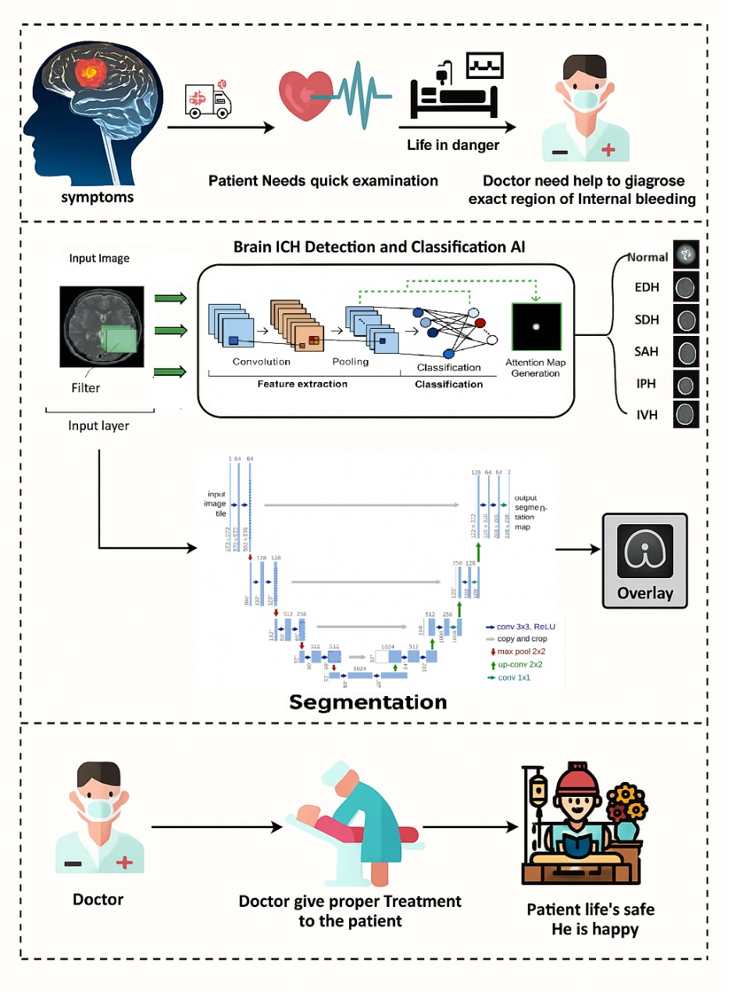

Model Architeture

The proposed model architecture is designed for automated detection and classification of intracranial hemorrhage (ICH) from non-contrast brain CT images. The preprocessed CT slices are provided as input to a deep Convolutional Neural Network (CNN), which serves as the feature extraction backbone. The CNN layers progressively learn hierarchical features ranging from low-level texture patterns to high-level semantic representations associated with hemorrhagic regions.
The extracted deep feature maps are passed through global pooling and fully connected layers to reduce dimensionality and enhance discriminative learning. These refined feature vectors are then forwarded to a classification head that predicts the presence or absence of intracranial hemorrhage, along with its specific subtypes, including subarachnoid, intraventricular, subdural, epidural, and intraparenchymal hemorrhages.
The model is trained using the training dataset, while the validation dataset is employed to monitor performance, tune hyperparameters, and prevent overfitting. After training, the finalized model is evaluated on an unseen test dataset to assess its generalization capability. This end-to-end architecture enables accurate, efficient, and reliable hemorrhage detection, supporting timely clinical decision-making in emergency diagnostic scenarios.